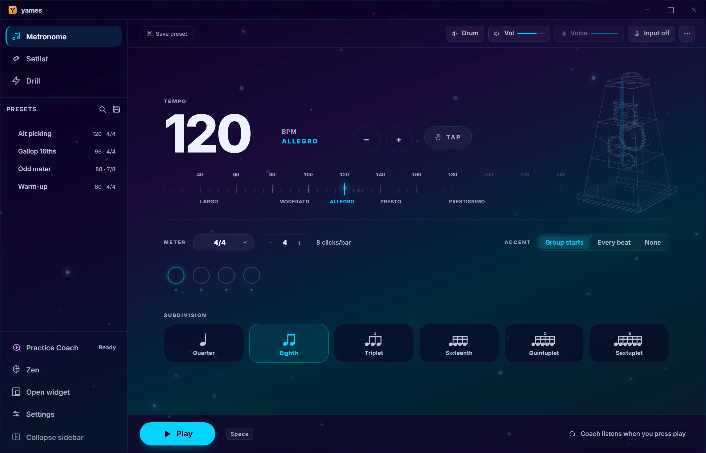

< 1 ms
Every click lands where it should. Leave it running for a whole session and bar 400 arrives exactly where bar 1 promised it would.
Ten themes · Seven live visuals · Zero setup
Timing you can trust for a whole session, ten full themes, and seven fullscreen visuals that move on the beat. Free, and nothing you play ever leaves your computer.
Free forever · no account · works offline
pick a theme — the whole page follows
< 1 ms
Every click lands where it should. Leave it running for a whole session and bar 400 arrives exactly where bar 1 promised it would.
0 €
Free, and open source. No account, no subscription, and no upsell screen halfway through your practice.
Offline
Even the practice coach. It listens and scores your session without sending a single note anywhere.
Zen mode
Cosmos, gravity, rain, warp, radar, pulse and focus — seven fullscreen visuals that move on the beat, in whichever theme you picked. Prop the laptop up across the room and stop looking at numbers.
Practice coach Beta
It listens while you play, scores the session, tells you whether you rushed or dragged and by how much, then adapts tomorrow’s tempo to match. It never needs a connection.

Speed drill
Ramps that climb on their own — straight up, zigzag, or adapting to how you played. Countdown, cyclic repeat, and presets that save the whole exercise.
Hands-free
Map any MIDI CC, note or program change to play, stop, tempo or subdivision. Every action has a hotkey, and the floating widget stays on top of your DAW and your sheet music.
macOS (Apple Silicon & Intel), Windows and Linux.
Download Yames — freebrew install --cask turutupa/tap/yames
Missing a feature? Request it here →